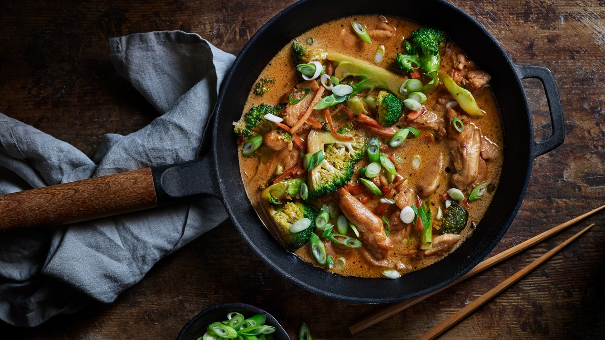

Ett kul recept jag har delat med familj och vänner.

För 4 personer så behöver du följande:
2 st Morötter
250g Broccoli
3 st Vitlöksklyftor
450g Kycklinglårfilé
1 tsk Salt
2 msk Smör
1 dl Teriyakisås
2 msk Japansk Soja
1-2 tsk Saambal oelek
2,5 dl Grädde
4 Portioner Jasminris
4 Salladslökar
Tillagning:
Koka riset enligt anvisning på förpackningen.
Skala och strimla morötterna. Dela broccolin i små buketter och strimla stjälkarna. Skala och skiva vitlöksklyftorna. Skiva salladslöken tunt.
Strimla och salta kycklingen. Hetta upp smör-&rapsolja i en stekpanna. Stek kycklingen till fin färg. Lägg över på ett fat.
Fräs grönsakerna i stekpannan i 2-3 min på hög värme. Lägg tillbaka kycklingen och häll på teriyakisås, soja, sambal oelek och grädde. Låt allt koka några minuter, tills kycklingen har en innertemperatur på 72°.
Toppa teriyakikycklingen med tunt skivad salladslök och servera med ris.